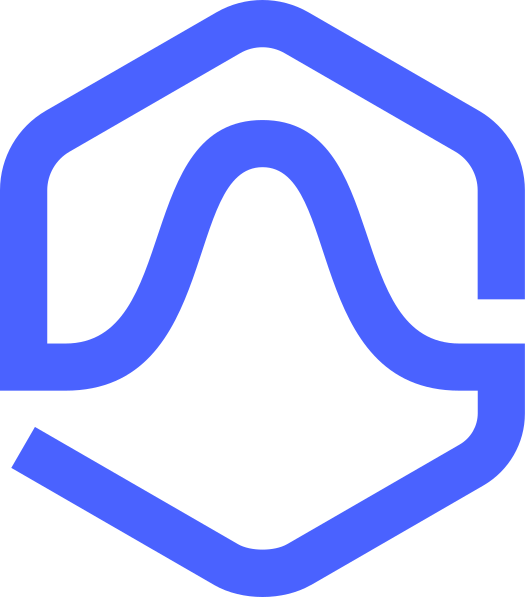

Adrian Castro
Based in München, Germany | Italian (C2), Spanish (C2), English (C1), German (B1), French (A2), Portuguese (A2)Adrian Castro
Based in München, Germany | Italian (C2), Spanish (C2), English (C1), German (B1), French (A2), Portuguese (A2) M.Sc. Data Engineering @ TUM, 2019 - 2022
M.Sc. Data Engineering @ TUM, 2019 - 2022
 B.Sc. Computer Science @ UniMiB, 2016 - 2019
B.Sc. Computer Science @ UniMiB, 2016 - 2019
 M.Sc. Data Engineering @ TUM, 2019 - 2022
M.Sc. Data Engineering @ TUM, 2019 - 2022
 B.Sc. Computer Science @ UniMiB, 2016 - 2019
B.Sc. Computer Science @ UniMiB, 2016 - 2019

Senior Software Engineer Specter, 02/2026 - Present- Built the MCP server from scratch and led the design and rollout of most new public APIs.
Senior Software Engineer
Tacto Technology GmbH, 09/2023 - 12/2025- Lead architectural decisions across the platform, ensuring scalability, reliability, and performance in high-load, data-heavy environments.
- Drive cross-functional technical initiatives that have a broad impact across the product, working closely with Product Managers, Designers, and fellow Engineers.
- Mentor and support other engineers, fostering technical growth and best practices through design reviews, pair programming, and knowledge sharing.
- Design and build distributed systems that handle complex workflows and large volumes of energy data efficiently and securely.
- Take ownership of critical components, ensuring they evolve with the needs of the business and maintain a high bar for quality and resilience.
- Influence technical direction and culture, helping shape how we build systems and collaborate as a team.
- Contribute to strategic planning, helping define roadmaps and long-term technical vision in partnership with engineering and leadership.
- Bringing good vibes and good food
Data Engineer
IONITY GmbH, 09/2022 - 08/2023- Led the effort of modernizing the entire data structure from the ground-up on AWS, reducing costs by 50%. High availability, scalability and security were the main focus.
- Modernized the team's development processes by introducing software-engineering methodologies, drastically reducing technical debt and increased trust in data processes
- Created CI/CD pipelines on GitLab for automated deployments of Terraform code on AWS
- Created pipelines involving Airflow, Glue and Kinesis Firehose handling hundreds of thousands of records per day coming from tens of sources within and outside our company
- Increased speed of existing pipelines by 50% to 250%
- Increased data awareness by setting company-wide standards in terms of data governance and policies
 Technical Co-Founder
Technical Co-Founder
Joleat, 2019 - 2022- Pitched our company to hundreds of people
- Grew the company from 0 to 400 sales in just 6 months
- Onboarded 60+ business partners to sell on our platform
- Everything with no capital invested in marketing
Software Engineer - D4L data4life gGmbH., 09/2021 - 08/2022
Events
Linux Day Milano 2019 - Event dedicated to Open Source, GNU/Linux, free software, sharing and open culture
Akademy 2019 - Organized the yearly KDE Akademy with more 200+ people with UnixMiB
MLConf San Francisco 2019 - Helped to organize the yearly MLConf in SF
FOSDEM - Participant since 2019
Papers and Essays
(TUM) Is This Real Life? - An essay about the possible future implications of AI onto society.
(TUM) Exploring and Analyzing Compression Algorithms in Preprocessing Pipelines - A report about my work extending and testing TensorFlow with Zstandard on Machine Learning preprocessing
pipelines.
(TUM) Model Parallelism: Challenges, State-of-the-art, and Future Directions - A survey of current state-of-the-art in model parallelism.
Tools
(UniMiB) PSO for Cancer Evolution - The aim for the script is to find the optimal cancer evolution tree given an input matrix representing
cancer cells
(TUM) WP Collect Implicit Feedback - A WordPress plugin that tracks user clicks and path across the website, with the goal of feeding
the data to interactive recommender systems.
CDash CLI Client - CDash API wrapper in Python.
Contributed To
Hobbies
I love to cook every kind of food and dish. I am a big fan of South American cuisine, especially
Ecuadorian and Peruvian. I also enjoy kickboxing and piano, although the latter is more like a
dead hobby.
My weakness is pausing movies or TV series to explain something happening there.
My weakness is pausing movies or TV series to explain something happening there.
Technologies and Knowledge
CI/CD • AWS • Azure • DevOps • JavaScript • Node.js • Python
• C++ • Backend Development • Data Engineering • Airflow • Batch Data
Processing • Event Processing • Deep Learning • Terraform • Linux •
Unix • Databases • SQL • REST APIs • High Performance Computing •
Distributed Systems • Microservices • Agile Development • Kubernetes
References
Available on request